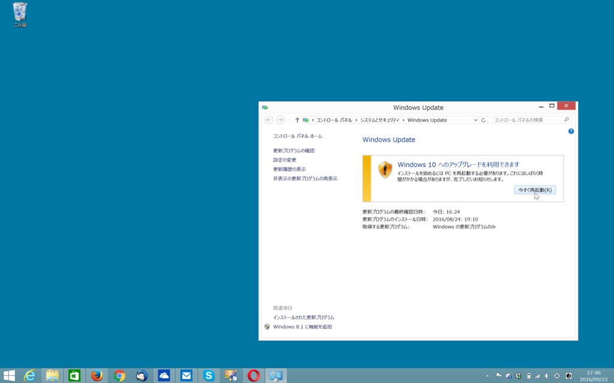
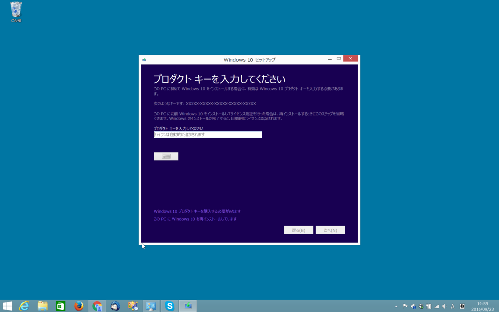
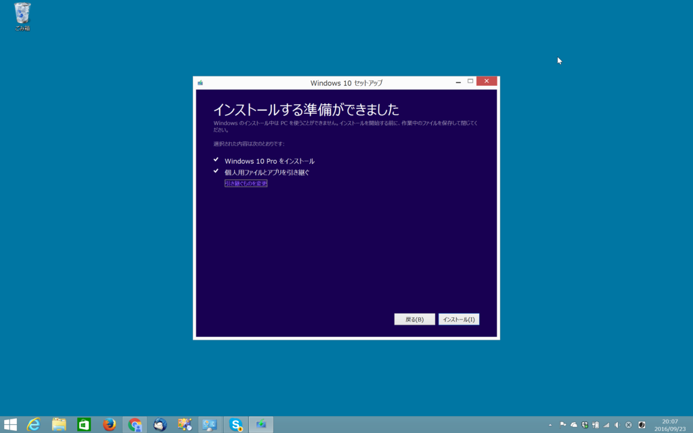
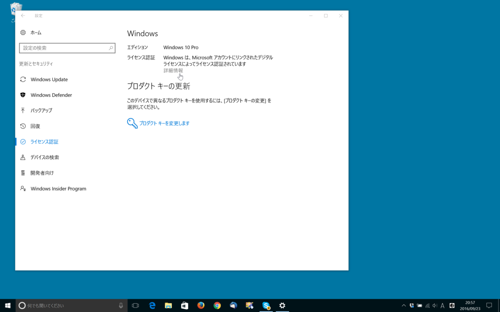
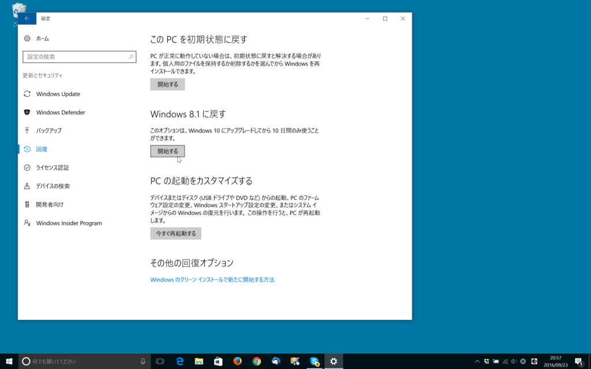

Windows 10 へ無償アップグレードしたあとに元のバージョンへ戻しておいた端末を再び Windows 10 にする
公開日：

最近使っていなかった MacBook（Windows 8.1）に電源を入れて Windows Update を開いてみると、「Windows 10 へのアップグレードを利用できます」という表記が。あれ、もう無償アップグレードキャンペーンって終わったんじゃなかったっけ？
このボタンを押すとどうなるのかちょっと気になったので、そのまま案内に従って作業を進めてみました。
結果は――別に何も起こりませんでした／(^o^)＼
再起動したら、溜まってた更新プログラムが適用されて、それだけ。フツーに Windows 8.1 が立ち上がりました。
けれど、そういえば、この MacBook は一度 Windows 10 へ無償アップグレードしたあとに、Windows 8.1 へ戻しておいたヤツであるはず。かつて聞いた話だと、一度 Windows 10 へ無償アップグレードしておけば、Windows 10 のライセンスをタダで確保できるという話だった。
いい機会なので、それが本当なのか試してみることにしました。ダメだったら、この記事がウソだったということになるな。
メディア作成ツール
まずは「メディア作成ツール」をダウンロード。
これを使えば、Windows 10 の ISO イメージをダウンロードして、OS をアップグレードできるハズ。

プロダクトキーの入力を求められたら、［この PC に Windows 10 を再インストールしています］というリンクをクリックすれば OK みたい。キーを入力しなくても、インストール画面へ進める。

あとは、案内に従ってアップグレードを進めるだけ。
無事 Windows 10 へ再アップグレード完了

アップグレード処理は1時間足らずで完了。「設定」アプリの［更新とセキュリティ］‐［ライセンス認証］画面を見てみると、「Windows は、Microsoft アカウントにリンクされたデジタルライセンスによってライセンスされています」とある。ちゃんと有効なライセンスが取得できているようですな？

なお、元の Windows 8.1 へ戻せる期間は 30 日 → 10 日へ短縮されているので注意。僕はこのまま Windows 10 で使い続けようかなーって思います。Windows 10 になれると、8.1 はちょっと……ねｗ